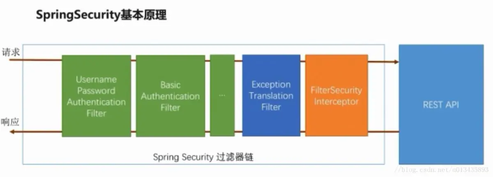
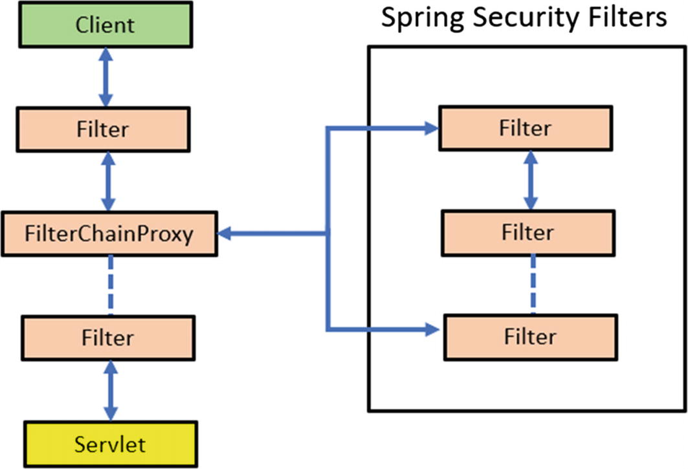
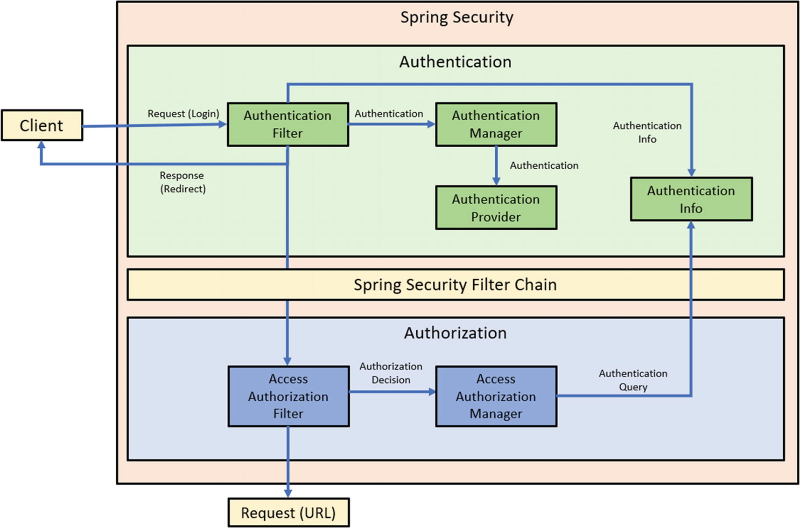
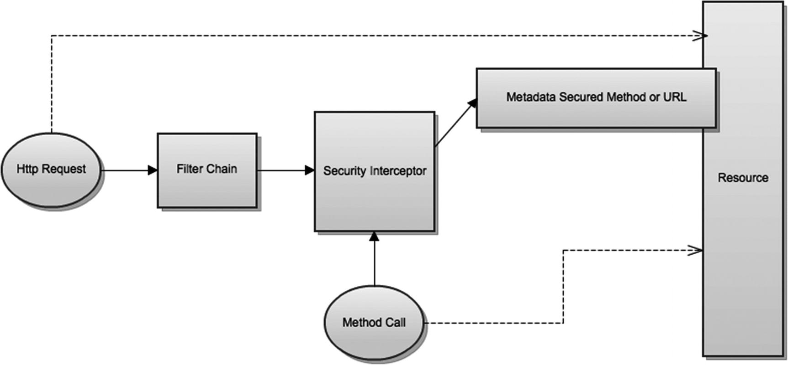
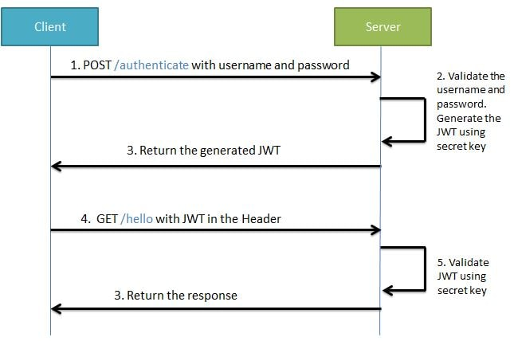
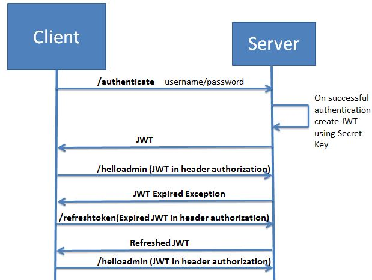

Table of Contents
1 Security
参考资料:
Spring Security官方文档
https://docs.spring.io/spring-security/site/docs/current/reference/html5/
动态URL权限
AccessDecisionManager组件介绍
自定义异常处理
Security + JWT
https://www.javainuse.com/spring/boot-jwt
1.1 Spring Security 架构
1.1.1 Spring Security基本原理
Spring Security所处位置:


- 核心组件
SecurityContextHolder
提供对 SecurityContext 的访问，底层封装了 ThreadLocal，使其管理的对象（SecurityContext ）存储在当前线程上；
SecurityContext
持有 Authentication 对象和其他可能需要的信息；
AuthenticationManager
其中可以包含多个AuthenticationProvider；
ProviderManager
对象为 AuthenticationManager 接口的实现类；
AuthenticationProvider
主要用来进行认证操作的类 调用其中的 authenticate() 方法去进行认证操作；
Authentication
Spring Security 方式的认证主体；
GrantedAuthority
对认证主题的应用层面的授权，含当前用户的权限信息，通常使用角色表示;
UserDetails
构建Authentication对象必须的信息，可以自定义，可能需要访问DB得到；
UserDetailsService
通过username构建UserDetails对象，通过loadUserByUsername根据userName获取UserDetail对象 （可以在这里基于自身业务进行自定义的实现 如通过数据库，xml,缓存获取等）。


3 Security + JWT
3.1 业务流程

3.2 生成Token

3.3 认证管理(Security的功能)

3.4 验证Token

3.5 Token刷新的流程
